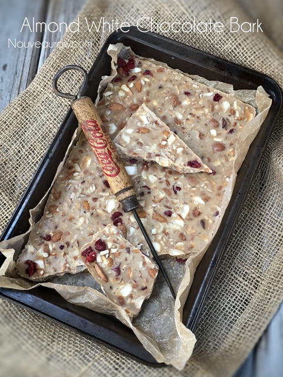
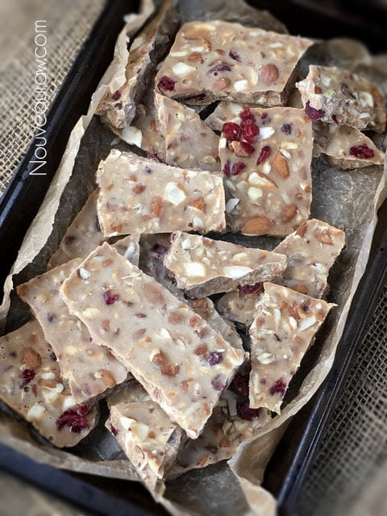

Almond White Chocolate Bark

~ raw, vegan, gluten-free ~
We all live very busy and complicated lives. Have you ever muttered under your breath…”I wish I had more time for myself.” or “I’m so busy! I don’t have a moment to breathe.” This one speaks to me: “I need more hours in the day!”
Here’s the thing, no matter what we do, there are only 24 hours in a day, so we can’t create more time. I have tried, trust me. But what we can do is start to clear some time by reevaluating priorities, or start practicing smart time management. It is essential because solitary time can help us have a better understanding of ourselves, our thoughts, and our emotions.
Insert… Chocolate Me-Time
When it comes to enjoying the taste of chocolate, you must be in an environment free of distractions. Take a moment to escape background noise, such as television, music, kids, dishwasher buzzers, or conversations. Create a space of alone-time to enjoy your moment of guilt-free indulgence. Being able to concentrate as intently as possible will enhance flavor and experience… plus you will be practicing what is referred to as self-love. :)
This chocolate has a pure, delicate flavor. It isn’t overpoweringly sweet or rich, which leaves you feeling light and yet satisfied. The almonds and dried cranberries complement one another, add another textual layer, as well as adding in plump pockets of sweetness. After enjoying a piece, it doesn’t leave you craving a glass of milk, nor does it leave you with that overly luxurious chocolate feeling in your stomach, wishing you had stopped with the first bite.
The Recipe as IS
I didn’t temper this white chocolate bark. I will provide a link down below on how to proceed to this step if you desire to do so. With the recipe as is, it is quick, easy, and delicious. It can be stored at room temp providing that you don’t live in an un-air-conditioned hut in the middle of the Sahara Desert. It is firm in texture but won’t have that solid, sharp “snap” that commercial chocolate offers. I don’t share this to discourage you or for you to feel that this recipe is “less than.” I want to share my experience.
I prefer to break it into chunks (after solidified), place in an airtight container, and store in the freezer. Number one, this will just keep it fresh and “snappy,” but it also keeps it a bit of “out-of-sight-out-of-mind”… making it an excellent dessert snack to enjoy from time to time.
I hope you enjoy this recipe and would love to hear your thoughts below. Many blessings amie sue P.S. The ice pick in the photo isn’t a plug for Coco-Cola… it’s an antique piece that I absolutely love.
yields 7×11″ pan (1/2″ thick bark)
- 250 g raw cacao butter
- 1/2 cup (65 g) lucuma powder
- 3/4 cup (100 g) coconut crystals, powdered
- 1/2 vanilla bean, seeds only
- Pinch Himalayan pink salt
- 1/3 cup dried cranberries
- 1/3 cup raw chopped almonds
Preparation:
- Have the chocolate mold/pan ready and waiting. Make sure that they are clean and dry!
- If you are using a silicone pan, be sure to place it on a sturdy baking sheet for transporting to the freezer.
- Grate or break the raw cacao up into small chunks.
- Do not start the recipe with melted cacao butter. By doing so, the other ingredients will fall to the bottom of the pan, causing separation.
- Place the cacao butter in a high-powdered blender. This recipe works best using the Vitamix with the tamper.
- Add the lucuma, powdered coconut crystals, vanilla bean seeds, and salt.
- It is crucial to powder the coconut crystals; otherwise, the chocolate will be grainy.
- Powder the salt too if it is a coarse grade.
- Start the blender on low and quickly take it to high.
- Use the tamper to push the ingredients into the blades.
- If a lot of chunks of ingredients are collecting on the sides of the blender carafe or the tamper, stop the machine and scrape everything back into the center of the blender.
- Once the chocolate has turned to a smooth texture, be sure to check the temperature and using the blender to bring it to 107 degrees (F). Do not go above. I use (this) temperature gun to check the temp.
- Pour the chocolate into the pan and sprinkle the dried cranberries and almonds on top.
- Slide into the freezer or fridge to set. It can harden at room temp, but chilling will speed up the process.
- Once solid, break into chunks, put in an airtight container, and place in the freezer.
- Enjoy within 2-3 months. Sooner is always better than later. :)
The Institute of Culinary Ingredients™
- Time-saving tips on how to grate raw cacao butter.
- Another fun way to prepare cacao butter for melting or gift-giving. Click (here).
- What is cacao butter? Click (here) to learn more.
- Want to learn more about raw cacao products? Click (here). This page will continue to grow, so please keep checking back.

© AmieSue.com